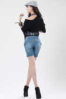

<!DOCTYPE html>
<html lang="zh">
<head>
    <meta charset="UTF-8">


    <meta http-equiv="X-UA-Compatible" content="IE=edge,chrome=1">
    <meta name="viewport" content="width=device-width, initial-scale=1.0">


    <title>jQuery可拖拽旋转的3D图片墙DEMO</title>

    <style type="text/css">
        *{margin:0;padding: 0;}
        html,body{

        }
        .pic{
            width: 120px;
            height: 180px;
            margin: 220px auto 0;
            position: relative;
            /*transform 旋转元素*/
            transform-style:preserve-3d;
            transform:perspective(800px) rotateX(-10deg);
        }
        body{
            background-color: #66677c;
            overflow: hidden}

        .pic img{
            position: absolute;
            width: 100%;
            height: 100%;
            border-radius: 5px;
            box-shadow: 0px 0px 10px #fff;
            /*倒影的设置*/
            -webkit-box-reflect:below 10px -webkit-linear-gradient(top,rgba(0,0,0,0) 50%,rgba(0,0,0,.5) 100%);
        }
        .pic p{
            width: 1200px;
            height: 1200px;
            background: -webkit-radial-gradient(center center,600px 600px,rgba(255,255,255,.5),rgba(0,0,0,0));
            position: absolute;
            top:100%;left:50%;
            margin-top: -600px;
            margin-left: -600px;
            border-radius:600px;
            transform:rotateX(90deg);
        }
        #page1{
            width: 200%;
        }
        .page img{
            display: none;
        }
    </style>

</head>
<body>

<div class="pic">
    
    
    
    <!---->
    <!---->
    <!---->
    <!---->
    <!---->
    <!---->
    <!---->
    <p></p>

</div>

<script src="js/jquery-1.11.0.min.js" type="text/javascript"></script>
<script type="text/javascript">
    $(function(){

        var imgL=$(".pic img").size();
        var deg=360/imgL;
        var roY=0,roX=-10;
        var xN=0,yN=0;
        var play=null;
        var timer=null;
        $(".pic img").each(function(i){
            $(this).css({
                <!--translateZ 定义2d旋转沿着z轴-->
                "transform":"rotateY("+i*deg+"deg) translateZ(130px)"	});
            $(this).click(function () {
                $(this).attr('id','page1')
            })

            $(this).attr('ondragstart','return false');

        });
        document.addEventListener('touchstart',function(ev){
            ev=ev.changedTouches[0];
            // console.log(ev)
            this.x_=ev.clientX;


            clearInterval(play);
            document.addEventListener('touchmove',function(ev){
                move.call(this,ev);
            });
        })
        function move(ev) {

            ev=ev.changedTouches[0];
            /*获取当前鼠标的坐标*/
            //console.log(ev.clientX)
//            this.x_=ev.clientX;
//            this.y_=ev.clientY;
            var x=ev.clientX;

            /*两次坐标之间的距离*/
            xN=x-this.x_;

            document.a=ev
            roY+=xN*0.05;


            //$('body').append('<div style="width:5px;height:5px;position:absolute;top:'+y+'px;left:'+x+'px;background-color:red"></div>');

            $('.pic').css({
                transform:'perspective(800px) rotateY('+roY+'deg)'
            });
            /*之前的鼠标坐标*/
            if(!timer){
                timer=setInterval(function () {
                    document.x_=document.a.clientX;

                },50)
            }


        }
        document.addEventListener('touchend',function(){
            clearInterval(timer);
            timer=null;
            document.removeEventListener('touchmove',move);
            play=setInterval(function(){
                xN*=0.90;
                yN*=0.90;
                if(Math.abs(xN)<1 && Math.abs(yN)<1){
                    clearInterval(play);
                }
                roY+=xN*0.03;
                roX-=yN*0.01;
                $('.pic').css({
                    transform:'perspective(800px)  rotateY('+roY+'deg)'
                });

            },30);

        });

    });
    //	$(document).addEventListener('click',function () {
    //	alert(1)
    //},false)
</script>

</body>
</html>